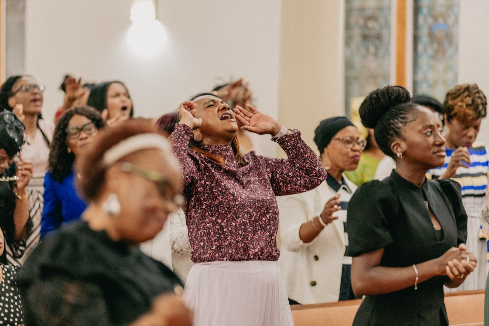

01 / 03
Your first Sunday
Come as you are.
From the moment you arrive, our church family is ready to welcome you. Worship begins Sunday at 10:30 a.m.
Plan Your Visit ↗

House of Bread Ministries
A church in the heart of the city, with the city in its heart. Come worship Jesus, grow through His Word, and find family.
Sunday Worship10:30 a.m.
Bible StudyWednesday · 7:30 p.m.
Join us in Mount Vernon335 South 4th Avenue →Welcome home
House of Bread Ministries is dedicated to nurturing both the spirit and the community.
People of all ages and backgrounds are welcome. Come experience God’s love, grow through His Word, and serve alongside a caring church family.
Our story →
Where two or three are gathered together in my name, there am I in the midst of them.Matthew 18:20
Your next step
Scroll to explore life at House of Bread.
Your first Sunday
From the moment you arrive, our church family is ready to welcome you. Worship begins Sunday at 10:30 a.m.
Plan Your Visit ↗
Church life
Join us throughout the week for Bible Study, Youth Service, fellowship and special gatherings for the whole family.
See Upcoming Events ↗WednesdayBible Study7:30 p.m.
FridayYouth Service7:30 p.m.
SundayWorship Service10:30 a.m.

HOB Online
Watch recent services and stay connected to the House of Bread family wherever you are.
Watch Recent Services ▶
Pastor Windell LyneSenior Pastor
A welcome from our pastor
At House of Bread Ministries, you will find a caring family committed to worship, prayer, the Word of God, and serving our community. We would be honored to welcome you and walk alongside you in faith.
Meet our leaders →